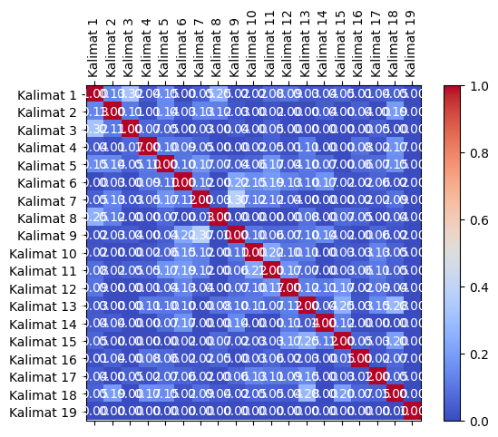

Scraping Data#
import requests
from bs4 import BeautifulSoup
import nltk
import pandas as pd
# Unduh konten halaman web berita
url = "https://radarjatim.id/lakukan-penipuan-lewat-online-shop-warga-sukomanunggal-dituntut-3-tahun-penjara/"
response = requests.get(url)
html = response.text
# Parsing halaman web menggunakan BeautifulSoup
soup = BeautifulSoup(html, 'html.parser')
# Ekstraksi teks dari elemen-elemen yang berisi berita
article = soup.find('div', class_="content-inner") # Sesuaikan dengan struktur HTML halaman web berita
# Periksa apakah elemen article ada sebelum mencoba mengambil teksnya
if article is not None:
article_text = article.get_text()
# Tokenisasi teks menjadi kalimat menggunakan nltk
nltk.download('punkt') # Pastikan Anda sudah mengunduh tokenisasi kalimat nltk
sentences = nltk.sent_tokenize(article_text)
# Cetak kalimat-kalimat
for sentence in sentences:
print(sentence)
else:
print("Elemen berita tidak ditemukan")
[nltk_data] Downloading package punkt to /root/nltk_data...
[nltk_data] Unzipping tokenizers/punkt.zip.
SIDOARJO (RadarJatim.id) – Jaksa Penuntut Umum (JPU) Kejaksaan Negeri (Kejari) Sidoarjo menuntut terdakwa Ika Rina Winarsih (45 tahun) selama 3 tahun penjara atas kasus penipuan dengan modus bisa memenangkan lelang rumah.
Tuntutan kepada ibu muda yang tinggal di Simo Prona Jaya 2, Kelurahan Simomulyo Baru, Kecamatan Sukomanunggal-Surabaya itu dibacakan oleh Budhi Cahyono, JPU Kejari Sidoarjo saat sidang di Pengadilan Negeri (PN) Sidoarjo, Rabu (18/10/2023).
“Menuntut dengan pidana penjara selama 3 tahun,” kata Budhi Cahyono.
Budi mengungkapkan bahwa terdakwa terbukti melakukan penipuan sebagaimana diatur dalam pasal 378 KUH Pidana yang menyebabkan korbannya Siti Aisyah mengalami kerugian hingga Rp 750 juta.
Modus penipuan yang dilakukan oleh terdakwa dengan memasang iklan penjualan rumah berlokasi di Perumahan Pondok Mutiara Blok G nomor 17 Sidoarjo dengan harga Rp 835 juta di aplikasi online shop.
Pada tanggal 05 Juni 2023 lalu, korban Siti Aisyah tertarik untuk membelinya ketika melihat iklan tersebut dan segera menghubungi nomor yang tertera pada iklan.
Ternyata nomor dalam iklan itu terhubung dengan saksi Luluk Muqori’ah yang kemudian diberi alamat PT Wincom Indonesia di Perumtas 4 Regency Cluster Gardenia D5 Nomor 4 Desa Sidodadi, Kecamatan Sidoarjo.
Foto Ika Rina Winarsih sebelum ditetapkan sebagai tersangka oleh Kejari Sidoarjo.
Kemudian korban mendatangi PT Wincom Indonesia pada 07 Juni 2023 dan bertemu dengan saksi Luluk Muqori’ah.
Lantas korban diarahkan saksi untuk menghubungi nomor telpon milik terdakwa.
Korban yang sudah terlanjur kepincut dengan rumah tersebut akhirnya menghubungi nomor terdakwa.
Korban lalu diminta terdakwa untuk ikut lelang, karena rumah tersebut dijual lelang dari Bank Rakyat Indonesia (BRI).
Terdakwa menjamin korban sebagai peserta pemenang lelang dan meminta korban untuk transfer uang Rp 50 juta sebagai tanda jadi dan uang titipan sebesar Rp 700 juta ke rekening terdakwa.
“Pelaksanaan lelang dilakukan pada 01 Juli 2023.
Namun, korban tak pernah didaftarkan sebagai peserta lelang apalagi menjadi pemenang lelang,” ungkapnya.
Termasuk penyerahan sertifikat beserta unit rumahnya tidak pernah terjadi sebagaimana yang telah dijanjikan oleh terdakwa.
Korban meminta terdakwa untuk mengembalikan uangnya dengan batas waktu satu bulan.
Namun, uang sebesar Rp 750 juta itu tak pernah kembali kepada korban hingga terdakwa duduk di kursi pesakitan PN Sidoarjo.
(mams)
# Inisialisasi DataFrame
df = pd.DataFrame(columns=["Kalimat"])
df["Kalimat"] = sentences
df
| Kalimat | |
|---|---|
| 0 | \nSIDOARJO (RadarJatim.id) – Jaksa Penuntut Um... |
| 1 | Tuntutan kepada ibu muda yang tinggal di Simo ... |
| 2 | “Menuntut dengan pidana penjara selama 3 tahun... |
| 3 | Budi mengungkapkan bahwa terdakwa terbukti mel... |
| 4 | Modus penipuan yang dilakukan oleh terdakwa de... |
| 5 | Pada tanggal 05 Juni 2023 lalu, korban Siti Ai... |
| 6 | Ternyata nomor dalam iklan itu terhubung denga... |
| 7 | Foto Ika Rina Winarsih sebelum ditetapkan seba... |
| 8 | Kemudian korban mendatangi PT Wincom Indonesia... |
| 9 | Lantas korban diarahkan saksi untuk menghubung... |
| 10 | Korban yang sudah terlanjur kepincut dengan ru... |
| 11 | Korban lalu diminta terdakwa untuk ikut lelang... |
| 12 | Terdakwa menjamin korban sebagai peserta pemen... |
| 13 | “Pelaksanaan lelang dilakukan pada 01 Juli 2023. |
| 14 | Namun, korban tak pernah didaftarkan sebagai p... |
| 15 | Termasuk penyerahan sertifikat beserta unit ru... |
| 16 | Korban meminta terdakwa untuk mengembalikan ua... |
| 17 | Namun, uang sebesar Rp 750 juta itu tak pernah... |
| 18 | (mams) |
TF-IDF#
from sklearn.feature_extraction.text import TfidfVectorizer
# Inisialisasi penghitung TF-IDF
tfidf_vectorizer = TfidfVectorizer()
# Hitung TF-IDF
tfidf_matrix = tfidf_vectorizer.fit_transform(sentences)
# Daftar kata kunci
feature_names = tfidf_vectorizer.get_feature_names_out()
# Konversi matriks TF-IDF menjadi bentuk yang lebih mudah dibaca
tfidf_values = tfidf_matrix.toarray()
# Cetak TF-IDF untuk setiap kata dalam setiap kalimat
for i, sentence in enumerate(sentences):
print(f"Kalimat {i + 1}: {sentence}")
for j, word in enumerate(feature_names):
tfidf_value = tfidf_values[i][j]
if tfidf_value > 0:
print(f"{word}: {tfidf_value:.4f}")
print()
Kalimat 1:
SIDOARJO (RadarJatim.id) – Jaksa Penuntut Umum (JPU) Kejaksaan Negeri (Kejari) Sidoarjo menuntut terdakwa Ika Rina Winarsih (45 tahun) selama 3 tahun penjara atas kasus penipuan dengan modus bisa memenangkan lelang rumah.
45: 0.1987
atas: 0.1987
bisa: 0.1987
dengan: 0.1153
id: 0.1987
ika: 0.1743
jaksa: 0.1987
jpu: 0.1743
kasus: 0.1987
kejaksaan: 0.1987
kejari: 0.1570
lelang: 0.1326
memenangkan: 0.1987
menuntut: 0.1743
modus: 0.1743
negeri: 0.1743
penipuan: 0.1570
penjara: 0.1743
penuntut: 0.1987
radarjatim: 0.1987
rina: 0.1743
rumah: 0.1436
selama: 0.1743
sidoarjo: 0.2466
tahun: 0.3486
terdakwa: 0.0961
umum: 0.1987
winarsih: 0.1743
Kalimat 2: Tuntutan kepada ibu muda yang tinggal di Simo Prona Jaya 2, Kelurahan Simomulyo Baru, Kecamatan Sukomanunggal-Surabaya itu dibacakan oleh Budhi Cahyono, JPU Kejari Sidoarjo saat sidang di Pengadilan Negeri (PN) Sidoarjo, Rabu (18/10/2023).
10: 0.1806
18: 0.1806
2023: 0.1305
baru: 0.1806
budhi: 0.1585
cahyono: 0.1585
di: 0.2610
dibacakan: 0.1806
ibu: 0.1806
itu: 0.1427
jaya: 0.1806
jpu: 0.1585
kecamatan: 0.1585
kejari: 0.1427
kelurahan: 0.1806
kepada: 0.1585
muda: 0.1806
negeri: 0.1585
oleh: 0.1305
pengadilan: 0.1806
pn: 0.1585
prona: 0.1806
rabu: 0.1806
saat: 0.1806
sidang: 0.1806
sidoarjo: 0.2242
simo: 0.1806
simomulyo: 0.1806
sukomanunggal: 0.1806
surabaya: 0.1806
tinggal: 0.1806
tuntutan: 0.1806
yang: 0.1048
Kalimat 3: “Menuntut dengan pidana penjara selama 3 tahun,” kata Budhi Cahyono.
budhi: 0.3383
cahyono: 0.3383
dengan: 0.2238
kata: 0.3857
menuntut: 0.3383
penjara: 0.3383
pidana: 0.3383
selama: 0.3383
tahun: 0.3383
Kalimat 4: Budi mengungkapkan bahwa terdakwa terbukti melakukan penipuan sebagaimana diatur dalam pasal 378 KUH Pidana yang menyebabkan korbannya Siti Aisyah mengalami kerugian hingga Rp 750 juta.
378: 0.2202
750: 0.1932
aisyah: 0.1932
bahwa: 0.2202
budi: 0.2202
dalam: 0.1932
diatur: 0.2202
hingga: 0.1932
juta: 0.1591
kerugian: 0.2202
korbannya: 0.2202
kuh: 0.2202
melakukan: 0.2202
mengalami: 0.2202
mengungkapkan: 0.2202
menyebabkan: 0.2202
pasal: 0.2202
penipuan: 0.1740
pidana: 0.1932
rp: 0.1591
sebagaimana: 0.1932
siti: 0.1932
terbukti: 0.2202
terdakwa: 0.1065
yang: 0.1278
Kalimat 5: Modus penipuan yang dilakukan oleh terdakwa dengan memasang iklan penjualan rumah berlokasi di Perumahan Pondok Mutiara Blok G nomor 17 Sidoarjo dengan harga Rp 835 juta di aplikasi online shop.
17: 0.2098
835: 0.2098
aplikasi: 0.2098
berlokasi: 0.2098
blok: 0.2098
dengan: 0.2435
di: 0.3032
dilakukan: 0.1841
harga: 0.2098
iklan: 0.1658
juta: 0.1516
memasang: 0.2098
modus: 0.1841
mutiara: 0.2098
nomor: 0.1400
oleh: 0.1516
online: 0.2098
penipuan: 0.1658
penjualan: 0.2098
perumahan: 0.2098
pondok: 0.2098
rp: 0.1516
rumah: 0.1516
shop: 0.2098
sidoarjo: 0.1302
terdakwa: 0.1015
yang: 0.1218
Kalimat 6: Pada tanggal 05 Juni 2023 lalu, korban Siti Aisyah tertarik untuk membelinya ketika melihat iklan tersebut dan segera menghubungi nomor yang tertera pada iklan.
05: 0.2238
2023: 0.1617
aisyah: 0.1964
dan: 0.1769
iklan: 0.3537
juni: 0.1964
ketika: 0.2238
korban: 0.1148
lalu: 0.1964
melihat: 0.2238
membelinya: 0.2238
menghubungi: 0.1769
nomor: 0.1494
pada: 0.3537
segera: 0.2238
siti: 0.1964
tanggal: 0.2238
tersebut: 0.1769
tertarik: 0.2238
tertera: 0.2238
untuk: 0.1494
yang: 0.1299
Kalimat 7: Ternyata nomor dalam iklan itu terhubung dengan saksi Luluk Muqori’ah yang kemudian diberi alamat PT Wincom Indonesia di Perumtas 4 Regency Cluster Gardenia D5 Nomor 4 Desa Sidodadi, Kecamatan Sidoarjo.
ah: 0.1829
alamat: 0.2084
cluster: 0.2084
d5: 0.2084
dalam: 0.1829
dengan: 0.1209
desa: 0.2084
di: 0.1506
diberi: 0.2084
gardenia: 0.2084
iklan: 0.1647
indonesia: 0.1647
itu: 0.1647
kecamatan: 0.1829
kemudian: 0.1829
luluk: 0.1829
muqori: 0.1829
nomor: 0.2782
perumtas: 0.2084
pt: 0.1829
regency: 0.2084
saksi: 0.1647
sidoarjo: 0.1294
sidodadi: 0.2084
terhubung: 0.2084
ternyata: 0.2084
wincom: 0.1829
yang: 0.1209
Kalimat 8: Foto Ika Rina Winarsih sebelum ditetapkan sebagai tersangka oleh Kejari Sidoarjo.
ditetapkan: 0.3437
foto: 0.3437
ika: 0.3015
kejari: 0.2716
oleh: 0.2484
rina: 0.3015
sebagai: 0.2716
sebelum: 0.3437
sidoarjo: 0.2133
tersangka: 0.3437
winarsih: 0.3015
Kalimat 9: Kemudian korban mendatangi PT Wincom Indonesia pada 07 Juni 2023 dan bertemu dengan saksi Luluk Muqori’ah.
07: 0.2886
2023: 0.2085
ah: 0.2532
bertemu: 0.2886
dan: 0.2280
dengan: 0.1675
indonesia: 0.2280
juni: 0.2532
kemudian: 0.2532
korban: 0.1480
luluk: 0.2532
mendatangi: 0.2886
muqori: 0.2532
pada: 0.2280
pt: 0.2532
saksi: 0.2280
wincom: 0.2532
Kalimat 10: Lantas korban diarahkan saksi untuk menghubungi nomor telpon milik terdakwa.
diarahkan: 0.3882
korban: 0.1990
lantas: 0.3882
menghubungi: 0.3067
milik: 0.3882
nomor: 0.2591
saksi: 0.3067
telpon: 0.3882
terdakwa: 0.1878
untuk: 0.2591
Kalimat 11: Korban yang sudah terlanjur kepincut dengan rumah tersebut akhirnya menghubungi nomor terdakwa.
akhirnya: 0.3679
dengan: 0.2135
kepincut: 0.3679
korban: 0.1886
menghubungi: 0.2907
nomor: 0.2455
rumah: 0.2659
sudah: 0.3679
terdakwa: 0.1780
terlanjur: 0.3679
tersebut: 0.2907
yang: 0.2135
Kalimat 12: Korban lalu diminta terdakwa untuk ikut lelang, karena rumah tersebut dijual lelang dari Bank Rakyat Indonesia (BRI).
bank: 0.2746
bri: 0.2746
dari: 0.2746
dijual: 0.2746
diminta: 0.2746
ikut: 0.2746
indonesia: 0.2169
karena: 0.2746
korban: 0.1408
lalu: 0.2409
lelang: 0.3665
rakyat: 0.2746
rumah: 0.1984
terdakwa: 0.1328
tersebut: 0.2169
untuk: 0.1832
Kalimat 13: Terdakwa menjamin korban sebagai peserta pemenang lelang dan meminta korban untuk transfer uang Rp 50 juta sebagai tanda jadi dan uang titipan sebesar Rp 700 juta ke rekening terdakwa.
50: 0.1917
700: 0.1917
dan: 0.3030
jadi: 0.1917
juta: 0.2771
ke: 0.1917
korban: 0.1966
lelang: 0.1279
meminta: 0.1682
menjamin: 0.1917
pemenang: 0.1682
peserta: 0.1682
rekening: 0.1917
rp: 0.2771
sebagai: 0.3030
sebesar: 0.1682
tanda: 0.1917
terdakwa: 0.1855
titipan: 0.1917
transfer: 0.1917
uang: 0.3364
untuk: 0.1279
Kalimat 14: “Pelaksanaan lelang dilakukan pada 01 Juli 2023.
01: 0.4319
2023: 0.3121
dilakukan: 0.3789
juli: 0.4319
lelang: 0.2882
pada: 0.3412
pelaksanaan: 0.4319
Kalimat 15: Namun, korban tak pernah didaftarkan sebagai peserta lelang apalagi menjadi pemenang lelang,” ungkapnya.
apalagi: 0.3105
didaftarkan: 0.3105
korban: 0.1592
lelang: 0.4145
menjadi: 0.3105
namun: 0.2724
pemenang: 0.2724
pernah: 0.2453
peserta: 0.2724
sebagai: 0.2453
tak: 0.2724
ungkapnya: 0.3105
Kalimat 16: Termasuk penyerahan sertifikat beserta unit rumahnya tidak pernah terjadi sebagaimana yang telah dijanjikan oleh terdakwa.
beserta: 0.2830
dijanjikan: 0.2830
oleh: 0.2045
penyerahan: 0.2830
pernah: 0.2236
rumahnya: 0.2830
sebagaimana: 0.2483
sertifikat: 0.2830
telah: 0.2830
terdakwa: 0.1369
terjadi: 0.2830
termasuk: 0.2830
tidak: 0.2830
unit: 0.2830
yang: 0.1642
Kalimat 17: Korban meminta terdakwa untuk mengembalikan uangnya dengan batas waktu satu bulan.
batas: 0.3525
bulan: 0.3525
dengan: 0.2045
korban: 0.1807
meminta: 0.3092
mengembalikan: 0.3525
satu: 0.3525
terdakwa: 0.1705
uangnya: 0.3525
untuk: 0.2352
waktu: 0.3525
Kalimat 18: Namun, uang sebesar Rp 750 juta itu tak pernah kembali kepada korban hingga terdakwa duduk di kursi pesakitan PN Sidoarjo.
750: 0.2357
di: 0.1941
duduk: 0.2687
hingga: 0.2357
itu: 0.2123
juta: 0.1941
kembali: 0.2687
kepada: 0.2357
korban: 0.1377
kursi: 0.2687
namun: 0.2357
pernah: 0.2123
pesakitan: 0.2687
pn: 0.2357
rp: 0.1941
sebesar: 0.2357
sidoarjo: 0.1668
tak: 0.2357
terdakwa: 0.1300
uang: 0.2357
Kalimat 19: (mams)
mams: 1.0000
from sklearn.metrics.pairwise import cosine_similarity
from sklearn.feature_extraction.text import TfidfVectorizer
# Indeks kalimat yang akan dibandingkan
sentence1_index = 0 # Ganti dengan indeks kalimat pertama yang ingin Anda bandingkan
sentence2_index = 1 # Ganti dengan indeks kalimat kedua yang ingin Anda bandingkan
# Ambil vektor TF-IDF untuk kedua kalimat
tfidf_vector1 = tfidf_matrix[sentence1_index]
tfidf_vector2 = tfidf_matrix[sentence2_index]
# Hitung cosine similarity antara kedua vektor
similarity = cosine_similarity(tfidf_vector1, tfidf_vector2)
# Cetak hasil cosine similarity
print(f"Cosine Similarity antara Kalimat {sentence1_index + 1} dan Kalimat {sentence2_index + 1}: {similarity[0][0]:.4f}")
Cosine Similarity antara Kalimat 1 dan Kalimat 2: 0.1330
Cosine Similarity#
# Matriks TF-IDF telah dihitung sebelumnya (tfidf_matrix)
# Hitung cosine similarity antara semua pasangan kalimat
similarity_matrix = cosine_similarity(tfidf_matrix, tfidf_matrix)
# Cetak hasil similarity_matrix
num_sentences = len(sentences) # Jumlah kalimat
for i in range(num_sentences):
for j in range(i+1, num_sentences):
similarity = similarity_matrix[i][j]
print(f"Cosine Similarity antara Kalimat {i + 1} dan Kalimat {j + 1}: {similarity:.4f}")
Cosine Similarity antara Kalimat 1 dan Kalimat 2: 0.1330
Cosine Similarity antara Kalimat 1 dan Kalimat 3: 0.3206
Cosine Similarity antara Kalimat 1 dan Kalimat 4: 0.0376
Cosine Similarity antara Kalimat 1 dan Kalimat 5: 0.1498
Cosine Similarity antara Kalimat 1 dan Kalimat 6: 0.0000
Cosine Similarity antara Kalimat 1 dan Kalimat 7: 0.0459
Cosine Similarity antara Kalimat 1 dan Kalimat 8: 0.2529
Cosine Similarity antara Kalimat 1 dan Kalimat 9: 0.0193
Cosine Similarity antara Kalimat 1 dan Kalimat 10: 0.0181
Cosine Similarity antara Kalimat 1 dan Kalimat 11: 0.0799
Cosine Similarity antara Kalimat 1 dan Kalimat 12: 0.0898
Cosine Similarity antara Kalimat 1 dan Kalimat 13: 0.0348
Cosine Similarity antara Kalimat 1 dan Kalimat 14: 0.0382
Cosine Similarity antara Kalimat 1 dan Kalimat 15: 0.0550
Cosine Similarity antara Kalimat 1 dan Kalimat 16: 0.0132
Cosine Similarity antara Kalimat 1 dan Kalimat 17: 0.0400
Cosine Similarity antara Kalimat 1 dan Kalimat 18: 0.0536
Cosine Similarity antara Kalimat 1 dan Kalimat 19: 0.0000
Cosine Similarity antara Kalimat 2 dan Kalimat 3: 0.1072
Cosine Similarity antara Kalimat 2 dan Kalimat 4: 0.0134
Cosine Similarity antara Kalimat 2 dan Kalimat 5: 0.1409
Cosine Similarity antara Kalimat 2 dan Kalimat 6: 0.0347
Cosine Similarity antara Kalimat 2 dan Kalimat 7: 0.1335
Cosine Similarity antara Kalimat 2 dan Kalimat 8: 0.1190
Cosine Similarity antara Kalimat 2 dan Kalimat 9: 0.0272
Cosine Similarity antara Kalimat 2 dan Kalimat 10: 0.0000
Cosine Similarity antara Kalimat 2 dan Kalimat 11: 0.0224
Cosine Similarity antara Kalimat 2 dan Kalimat 12: 0.0000
Cosine Similarity antara Kalimat 2 dan Kalimat 13: 0.0000
Cosine Similarity antara Kalimat 2 dan Kalimat 14: 0.0407
Cosine Similarity antara Kalimat 2 dan Kalimat 15: 0.0000
Cosine Similarity antara Kalimat 2 dan Kalimat 16: 0.0439
Cosine Similarity antara Kalimat 2 dan Kalimat 17: 0.0000
Cosine Similarity antara Kalimat 2 dan Kalimat 18: 0.1931
Cosine Similarity antara Kalimat 2 dan Kalimat 19: 0.0000
Cosine Similarity antara Kalimat 3 dan Kalimat 4: 0.0653
Cosine Similarity antara Kalimat 3 dan Kalimat 5: 0.0545
Cosine Similarity antara Kalimat 3 dan Kalimat 6: 0.0000
Cosine Similarity antara Kalimat 3 dan Kalimat 7: 0.0271
Cosine Similarity antara Kalimat 3 dan Kalimat 8: 0.0000
Cosine Similarity antara Kalimat 3 dan Kalimat 9: 0.0375
Cosine Similarity antara Kalimat 3 dan Kalimat 10: 0.0000
Cosine Similarity antara Kalimat 3 dan Kalimat 11: 0.0478
Cosine Similarity antara Kalimat 3 dan Kalimat 12: 0.0000
Cosine Similarity antara Kalimat 3 dan Kalimat 13: 0.0000
Cosine Similarity antara Kalimat 3 dan Kalimat 14: 0.0000
Cosine Similarity antara Kalimat 3 dan Kalimat 15: 0.0000
Cosine Similarity antara Kalimat 3 dan Kalimat 16: 0.0000
Cosine Similarity antara Kalimat 3 dan Kalimat 17: 0.0458
Cosine Similarity antara Kalimat 3 dan Kalimat 18: 0.0000
Cosine Similarity antara Kalimat 3 dan Kalimat 19: 0.0000
Cosine Similarity antara Kalimat 4 dan Kalimat 5: 0.1035
Cosine Similarity antara Kalimat 4 dan Kalimat 6: 0.0925
Cosine Similarity antara Kalimat 4 dan Kalimat 7: 0.0508
Cosine Similarity antara Kalimat 4 dan Kalimat 8: 0.0000
Cosine Similarity antara Kalimat 4 dan Kalimat 9: 0.0000
Cosine Similarity antara Kalimat 4 dan Kalimat 10: 0.0200
Cosine Similarity antara Kalimat 4 dan Kalimat 11: 0.0462
Cosine Similarity antara Kalimat 4 dan Kalimat 12: 0.0142
Cosine Similarity antara Kalimat 4 dan Kalimat 13: 0.1079
Cosine Similarity antara Kalimat 4 dan Kalimat 14: 0.0000
Cosine Similarity antara Kalimat 4 dan Kalimat 15: 0.0000
Cosine Similarity antara Kalimat 4 dan Kalimat 16: 0.0835
Cosine Similarity antara Kalimat 4 dan Kalimat 17: 0.0182
Cosine Similarity antara Kalimat 4 dan Kalimat 18: 0.1667
Cosine Similarity antara Kalimat 4 dan Kalimat 19: 0.0000
Cosine Similarity antara Kalimat 5 dan Kalimat 6: 0.0954
Cosine Similarity antara Kalimat 5 dan Kalimat 7: 0.1730
Cosine Similarity antara Kalimat 5 dan Kalimat 8: 0.0654
Cosine Similarity antara Kalimat 5 dan Kalimat 9: 0.0408
Cosine Similarity antara Kalimat 5 dan Kalimat 10: 0.0553
Cosine Similarity antara Kalimat 5 dan Kalimat 11: 0.1707
Cosine Similarity antara Kalimat 5 dan Kalimat 12: 0.0436
Cosine Similarity antara Kalimat 5 dan Kalimat 13: 0.1028
Cosine Similarity antara Kalimat 5 dan Kalimat 14: 0.0697
Cosine Similarity antara Kalimat 5 dan Kalimat 15: 0.0000
Cosine Similarity antara Kalimat 5 dan Kalimat 16: 0.0649
Cosine Similarity antara Kalimat 5 dan Kalimat 17: 0.0671
Cosine Similarity antara Kalimat 5 dan Kalimat 18: 0.1526
Cosine Similarity antara Kalimat 5 dan Kalimat 19: 0.0000
Cosine Similarity antara Kalimat 6 dan Kalimat 7: 0.1155
Cosine Similarity antara Kalimat 6 dan Kalimat 8: 0.0000
Cosine Similarity antara Kalimat 6 dan Kalimat 9: 0.2214
Cosine Similarity antara Kalimat 6 dan Kalimat 10: 0.1545
Cosine Similarity antara Kalimat 6 dan Kalimat 11: 0.1889
Cosine Similarity antara Kalimat 6 dan Kalimat 12: 0.1292
Cosine Similarity antara Kalimat 6 dan Kalimat 13: 0.0953
Cosine Similarity antara Kalimat 6 dan Kalimat 14: 0.1712
Cosine Similarity antara Kalimat 6 dan Kalimat 15: 0.0183
Cosine Similarity antara Kalimat 6 dan Kalimat 16: 0.0213
Cosine Similarity antara Kalimat 6 dan Kalimat 17: 0.0559
Cosine Similarity antara Kalimat 6 dan Kalimat 18: 0.0158
Cosine Similarity antara Kalimat 6 dan Kalimat 19: 0.0000
Cosine Similarity antara Kalimat 7 dan Kalimat 8: 0.0276
Cosine Similarity antara Kalimat 7 dan Kalimat 9: 0.3731
Cosine Similarity antara Kalimat 7 dan Kalimat 10: 0.1226
Cosine Similarity antara Kalimat 7 dan Kalimat 11: 0.1200
Cosine Similarity antara Kalimat 7 dan Kalimat 12: 0.0357
Cosine Similarity antara Kalimat 7 dan Kalimat 13: 0.0000
Cosine Similarity antara Kalimat 7 dan Kalimat 14: 0.0000
Cosine Similarity antara Kalimat 7 dan Kalimat 15: 0.0000
Cosine Similarity antara Kalimat 7 dan Kalimat 16: 0.0199
Cosine Similarity antara Kalimat 7 dan Kalimat 17: 0.0247
Cosine Similarity antara Kalimat 7 dan Kalimat 18: 0.0858
Cosine Similarity antara Kalimat 7 dan Kalimat 19: 0.0000
Cosine Similarity antara Kalimat 8 dan Kalimat 9: 0.0000
Cosine Similarity antara Kalimat 8 dan Kalimat 10: 0.0000
Cosine Similarity antara Kalimat 8 dan Kalimat 11: 0.0000
Cosine Similarity antara Kalimat 8 dan Kalimat 12: 0.0000
Cosine Similarity antara Kalimat 8 dan Kalimat 13: 0.0823
Cosine Similarity antara Kalimat 8 dan Kalimat 14: 0.0000
Cosine Similarity antara Kalimat 8 dan Kalimat 15: 0.0666
Cosine Similarity antara Kalimat 8 dan Kalimat 16: 0.0508
Cosine Similarity antara Kalimat 8 dan Kalimat 17: 0.0000
Cosine Similarity antara Kalimat 8 dan Kalimat 18: 0.0356
Cosine Similarity antara Kalimat 8 dan Kalimat 19: 0.0000
Cosine Similarity antara Kalimat 9 dan Kalimat 10: 0.0994
Cosine Similarity antara Kalimat 9 dan Kalimat 11: 0.0637
Cosine Similarity antara Kalimat 9 dan Kalimat 12: 0.0703
Cosine Similarity antara Kalimat 9 dan Kalimat 13: 0.0982
Cosine Similarity antara Kalimat 9 dan Kalimat 14: 0.1429
Cosine Similarity antara Kalimat 9 dan Kalimat 15: 0.0236
Cosine Similarity antara Kalimat 9 dan Kalimat 16: 0.0000
Cosine Similarity antara Kalimat 9 dan Kalimat 17: 0.0610
Cosine Similarity antara Kalimat 9 dan Kalimat 18: 0.0204
Cosine Similarity antara Kalimat 9 dan Kalimat 19: 0.0000
Cosine Similarity antara Kalimat 10 dan Kalimat 11: 0.2238
Cosine Similarity antara Kalimat 10 dan Kalimat 12: 0.1004
Cosine Similarity antara Kalimat 10 dan Kalimat 13: 0.1071
Cosine Similarity antara Kalimat 10 dan Kalimat 14: 0.0000
Cosine Similarity antara Kalimat 10 dan Kalimat 15: 0.0317
Cosine Similarity antara Kalimat 10 dan Kalimat 16: 0.0257
Cosine Similarity antara Kalimat 10 dan Kalimat 17: 0.1289
Cosine Similarity antara Kalimat 10 dan Kalimat 18: 0.0518
Cosine Similarity antara Kalimat 10 dan Kalimat 19: 0.0000
Cosine Similarity antara Kalimat 11 dan Kalimat 12: 0.1660
Cosine Similarity antara Kalimat 11 dan Kalimat 13: 0.0701
Cosine Similarity antara Kalimat 11 dan Kalimat 14: 0.0000
Cosine Similarity antara Kalimat 11 dan Kalimat 15: 0.0300
Cosine Similarity antara Kalimat 11 dan Kalimat 16: 0.0594
Cosine Similarity antara Kalimat 11 dan Kalimat 17: 0.1081
Cosine Similarity antara Kalimat 11 dan Kalimat 18: 0.0491
Cosine Similarity antara Kalimat 11 dan Kalimat 19: 0.0000
Cosine Similarity antara Kalimat 12 dan Kalimat 13: 0.1227
Cosine Similarity antara Kalimat 12 dan Kalimat 14: 0.1056
Cosine Similarity antara Kalimat 12 dan Kalimat 15: 0.1743
Cosine Similarity antara Kalimat 12 dan Kalimat 16: 0.0182
Cosine Similarity antara Kalimat 12 dan Kalimat 17: 0.0912
Cosine Similarity antara Kalimat 12 dan Kalimat 18: 0.0367
Cosine Similarity antara Kalimat 12 dan Kalimat 19: 0.0000
Cosine Similarity antara Kalimat 13 dan Kalimat 14: 0.0369
Cosine Similarity antara Kalimat 13 dan Kalimat 15: 0.2503
Cosine Similarity antara Kalimat 13 dan Kalimat 16: 0.0254
Cosine Similarity antara Kalimat 13 dan Kalimat 17: 0.1493
Cosine Similarity antara Kalimat 13 dan Kalimat 18: 0.2777
Cosine Similarity antara Kalimat 13 dan Kalimat 19: 0.0000
Cosine Similarity antara Kalimat 14 dan Kalimat 15: 0.1195
Cosine Similarity antara Kalimat 14 dan Kalimat 16: 0.0000
Cosine Similarity antara Kalimat 14 dan Kalimat 17: 0.0000
Cosine Similarity antara Kalimat 14 dan Kalimat 18: 0.0000
Cosine Similarity antara Kalimat 14 dan Kalimat 19: 0.0000
Cosine Similarity antara Kalimat 15 dan Kalimat 16: 0.0549
Cosine Similarity antara Kalimat 15 dan Kalimat 17: 0.0288
Cosine Similarity antara Kalimat 15 dan Kalimat 18: 0.2024
Cosine Similarity antara Kalimat 15 dan Kalimat 19: 0.0000
Cosine Similarity antara Kalimat 16 dan Kalimat 17: 0.0233
Cosine Similarity antara Kalimat 16 dan Kalimat 18: 0.0653
Cosine Similarity antara Kalimat 16 dan Kalimat 19: 0.0000
Cosine Similarity antara Kalimat 17 dan Kalimat 18: 0.0471
Cosine Similarity antara Kalimat 17 dan Kalimat 19: 0.0000
Cosine Similarity antara Kalimat 18 dan Kalimat 19: 0.0000
import pandas as pd
# Matriks TF-IDF telah dihitung sebelumnya (tfidf_matrix)
# Hitung cosine similarity antara semua pasangan kalimat
similarity_matrix = cosine_similarity(tfidf_matrix, tfidf_matrix)
# Nama kolom dan indeks untuk DataFrame
sentence_indices = [f"Kalimat {i + 1}" for i in range(len(sentences))]
# Buat DataFrame dari hasil cosine similarity
df = pd.DataFrame(similarity_matrix, columns=sentence_indices, index=sentence_indices)
# Cetak DataFrame
df
| Kalimat 1 | Kalimat 2 | Kalimat 3 | Kalimat 4 | Kalimat 5 | Kalimat 6 | Kalimat 7 | Kalimat 8 | Kalimat 9 | Kalimat 10 | Kalimat 11 | Kalimat 12 | Kalimat 13 | Kalimat 14 | Kalimat 15 | Kalimat 16 | Kalimat 17 | Kalimat 18 | Kalimat 19 | |
|---|---|---|---|---|---|---|---|---|---|---|---|---|---|---|---|---|---|---|---|
| Kalimat 1 | 1.000000 | 0.132951 | 0.320627 | 0.037552 | 0.149828 | 0.000000 | 0.045853 | 0.252908 | 0.019306 | 0.018054 | 0.079894 | 0.089845 | 0.034798 | 0.038216 | 0.054953 | 0.013161 | 0.039972 | 0.053624 | 0.0 |
| Kalimat 2 | 0.132951 | 1.000000 | 0.107221 | 0.013391 | 0.140911 | 0.034724 | 0.133487 | 0.119015 | 0.027219 | 0.000000 | 0.022378 | 0.000000 | 0.000000 | 0.040731 | 0.000000 | 0.043900 | 0.000000 | 0.193066 | 0.0 |
| Kalimat 3 | 0.320627 | 0.107221 | 1.000000 | 0.065347 | 0.054490 | 0.000000 | 0.027065 | 0.000000 | 0.037474 | 0.000000 | 0.047776 | 0.000000 | 0.000000 | 0.000000 | 0.000000 | 0.000000 | 0.045768 | 0.000000 | 0.0 |
| Kalimat 4 | 0.037552 | 0.013391 | 0.065347 | 1.000000 | 0.103456 | 0.092451 | 0.050771 | 0.000000 | 0.000000 | 0.020007 | 0.046241 | 0.014152 | 0.107922 | 0.000000 | 0.000000 | 0.083515 | 0.018167 | 0.166668 | 0.0 |
| Kalimat 5 | 0.149828 | 0.140911 | 0.054490 | 0.103456 | 1.000000 | 0.095376 | 0.172959 | 0.065438 | 0.040778 | 0.055342 | 0.170747 | 0.043566 | 0.102845 | 0.069737 | 0.000000 | 0.064894 | 0.067116 | 0.152646 | 0.0 |
| Kalimat 6 | 0.000000 | 0.034724 | 0.000000 | 0.092451 | 0.095376 | 1.000000 | 0.115526 | 0.000000 | 0.221417 | 0.154481 | 0.188895 | 0.129195 | 0.095256 | 0.171178 | 0.018269 | 0.021327 | 0.055878 | 0.015807 | 0.0 |
| Kalimat 7 | 0.045853 | 0.133487 | 0.027065 | 0.050771 | 0.172959 | 0.115526 | 1.000000 | 0.027600 | 0.373132 | 0.122586 | 0.119959 | 0.035731 | 0.000000 | 0.000000 | 0.000000 | 0.019860 | 0.024737 | 0.085775 | 0.0 |
| Kalimat 8 | 0.252908 | 0.119015 | 0.000000 | 0.000000 | 0.065438 | 0.000000 | 0.027600 | 1.000000 | 0.000000 | 0.000000 | 0.000000 | 0.000000 | 0.082279 | 0.000000 | 0.066631 | 0.050783 | 0.000000 | 0.035575 | 0.0 |
| Kalimat 9 | 0.019306 | 0.027219 | 0.037474 | 0.000000 | 0.040778 | 0.221417 | 0.373132 | 0.000000 | 1.000000 | 0.099388 | 0.063664 | 0.070301 | 0.098174 | 0.142891 | 0.023555 | 0.000000 | 0.060989 | 0.020381 | 0.0 |
| Kalimat 10 | 0.018054 | 0.000000 | 0.000000 | 0.020007 | 0.055342 | 0.154481 | 0.122586 | 0.000000 | 0.099388 | 1.000000 | 0.223755 | 0.100433 | 0.107109 | 0.000000 | 0.031682 | 0.025714 | 0.128931 | 0.051825 | 0.0 |
| Kalimat 11 | 0.079894 | 0.022378 | 0.047776 | 0.046241 | 0.170747 | 0.188895 | 0.119959 | 0.000000 | 0.063664 | 0.223755 | 1.000000 | 0.166021 | 0.070108 | 0.000000 | 0.030030 | 0.059431 | 0.108114 | 0.049124 | 0.0 |
| Kalimat 12 | 0.089845 | 0.000000 | 0.000000 | 0.014152 | 0.043566 | 0.129195 | 0.035731 | 0.000000 | 0.070301 | 0.100433 | 0.166021 | 1.000000 | 0.122651 | 0.105625 | 0.174297 | 0.018189 | 0.091197 | 0.036658 | 0.0 |
| Kalimat 13 | 0.034798 | 0.000000 | 0.000000 | 0.107922 | 0.102845 | 0.095256 | 0.000000 | 0.082279 | 0.098174 | 0.107109 | 0.070108 | 0.122651 | 1.000000 | 0.036876 | 0.250280 | 0.025400 | 0.149263 | 0.277680 | 0.0 |
| Kalimat 14 | 0.038216 | 0.040731 | 0.000000 | 0.000000 | 0.069737 | 0.171178 | 0.000000 | 0.000000 | 0.142891 | 0.000000 | 0.000000 | 0.105625 | 0.036876 | 1.000000 | 0.119452 | 0.000000 | 0.000000 | 0.000000 | 0.0 |
| Kalimat 15 | 0.054953 | 0.000000 | 0.000000 | 0.000000 | 0.000000 | 0.018269 | 0.000000 | 0.066631 | 0.023555 | 0.031682 | 0.030030 | 0.174297 | 0.250280 | 0.119452 | 1.000000 | 0.054860 | 0.028768 | 0.202413 | 0.0 |
| Kalimat 16 | 0.013161 | 0.043900 | 0.000000 | 0.083515 | 0.064894 | 0.021327 | 0.019860 | 0.050783 | 0.000000 | 0.025714 | 0.059431 | 0.018189 | 0.025400 | 0.000000 | 0.054860 | 1.000000 | 0.023349 | 0.065264 | 0.0 |
| Kalimat 17 | 0.039972 | 0.000000 | 0.045768 | 0.018167 | 0.067116 | 0.055878 | 0.024737 | 0.000000 | 0.060989 | 0.128931 | 0.108114 | 0.091197 | 0.149263 | 0.000000 | 0.028768 | 0.023349 | 1.000000 | 0.047059 | 0.0 |
| Kalimat 18 | 0.053624 | 0.193066 | 0.000000 | 0.166668 | 0.152646 | 0.015807 | 0.085775 | 0.035575 | 0.020381 | 0.051825 | 0.049124 | 0.036658 | 0.277680 | 0.000000 | 0.202413 | 0.065264 | 0.047059 | 1.000000 | 0.0 |
| Kalimat 19 | 0.000000 | 0.000000 | 0.000000 | 0.000000 | 0.000000 | 0.000000 | 0.000000 | 0.000000 | 0.000000 | 0.000000 | 0.000000 | 0.000000 | 0.000000 | 0.000000 | 0.000000 | 0.000000 | 0.000000 | 0.000000 | 1.0 |
import pandas as pd
import numpy as np
import matplotlib.pyplot as plt
# Matriks TF-IDF telah dihitung sebelumnya (tfidf_matrix)
# Hitung cosine similarity antara semua pasangan kalimat
similarity_matrix = cosine_similarity(tfidf_matrix, tfidf_matrix)
# Nama kolom dan indeks untuk DataFrame
sentence_indices = [f"Kalimat {i + 1}" for i in range(len(sentences))]
# Buat DataFrame dari hasil cosine similarity
df = pd.DataFrame(similarity_matrix, columns=sentence_indices, index=sentence_indices)
# Membuat grafik matriks
fig, ax = plt.subplots()
cax = ax.matshow(df, cmap='coolwarm')
fig.colorbar(cax)
# Memberi label pada sumbu X dan Y
ax.set_xticks(np.arange(len(df.columns)))
ax.set_yticks(np.arange(len(df.index)))
ax.set_xticklabels(df.columns, rotation=90)
ax.set_yticklabels(df.index)
# Menampilkan nilai similarity pada matriks
for i in range(len(df.index)):
for j in range(len(df.columns)):
text = ax.text(j, i, f'{df.iat[i, j]:.2f}', ha='center', va='center', color='w')
plt.show()

import networkx as nx
# Buat grafik dari matriks similarity
G = nx.Graph()
# Tambahkan simpul (node) ke grafik yang mewakili setiap kalimat
for sentence in sentences:
G.add_node(sentence)
# Tambahkan tepi (edge) antara kalimat berdasarkan similarity
for i in range(len(sentences)):
for j in range(i + 1, len(sentences)):
similarity = df.iloc[i, j] # Mengambil similarity dari DataFrame
if similarity > 0:
G.add_edge(sentences[i], sentences[j], weight=similarity)
# Hitung closeness centrality untuk setiap simpul
closeness_centrality = nx.closeness_centrality(G, distance='weight')
# Cetak closeness centrality
for sentence, centrality in closeness_centrality.items():
print(f"Closeness Centrality of {sentence}: {centrality:.4f}")
Closeness Centrality of
SIDOARJO (RadarJatim.id) – Jaksa Penuntut Umum (JPU) Kejaksaan Negeri (Kejari) Sidoarjo menuntut terdakwa Ika Rina Winarsih (45 tahun) selama 3 tahun penjara atas kasus penipuan dengan modus bisa memenangkan lelang rumah.: 23.8951
Closeness Centrality of Tuntutan kepada ibu muda yang tinggal di Simo Prona Jaya 2, Kelurahan Simomulyo Baru, Kecamatan Sukomanunggal-Surabaya itu dibacakan oleh Budhi Cahyono, JPU Kejari Sidoarjo saat sidang di Pengadilan Negeri (PN) Sidoarjo, Rabu (18/10/2023).: 21.0923
Closeness Centrality of “Menuntut dengan pidana penjara selama 3 tahun,” kata Budhi Cahyono.: 16.2265
Closeness Centrality of Budi mengungkapkan bahwa terdakwa terbukti melakukan penipuan sebagaimana diatur dalam pasal 378 KUH Pidana yang menyebabkan korbannya Siti Aisyah mengalami kerugian hingga Rp 750 juta.: 22.7810
Closeness Centrality of Modus penipuan yang dilakukan oleh terdakwa dengan memasang iklan penjualan rumah berlokasi di Perumahan Pondok Mutiara Blok G nomor 17 Sidoarjo dengan harga Rp 835 juta di aplikasi online shop.: 14.5523
Closeness Centrality of Pada tanggal 05 Juni 2023 lalu, korban Siti Aisyah tertarik untuk membelinya ketika melihat iklan tersebut dan segera menghubungi nomor yang tertera pada iklan.: 21.5316
Closeness Centrality of Ternyata nomor dalam iklan itu terhubung dengan saksi Luluk Muqori’ah yang kemudian diberi alamat PT Wincom Indonesia di Perumtas 4 Regency Cluster Gardenia D5 Nomor 4 Desa Sidodadi, Kecamatan Sidoarjo.: 20.3896
Closeness Centrality of Foto Ika Rina Winarsih sebelum ditetapkan sebagai tersangka oleh Kejari Sidoarjo.: 15.0863
Closeness Centrality of Kemudian korban mendatangi PT Wincom Indonesia pada 07 Juni 2023 dan bertemu dengan saksi Luluk Muqori’ah.: 23.3426
Closeness Centrality of Lantas korban diarahkan saksi untuk menghubungi nomor telpon milik terdakwa.: 21.4845
Closeness Centrality of Korban yang sudah terlanjur kepincut dengan rumah tersebut akhirnya menghubungi nomor terdakwa.: 16.8285
Closeness Centrality of Korban lalu diminta terdakwa untuk ikut lelang, karena rumah tersebut dijual lelang dari Bank Rakyat Indonesia (BRI).: 22.6283
Closeness Centrality of Terdakwa menjamin korban sebagai peserta pemenang lelang dan meminta korban untuk transfer uang Rp 50 juta sebagai tanda jadi dan uang titipan sebesar Rp 700 juta ke rekening terdakwa.: 17.0145
Closeness Centrality of “Pelaksanaan lelang dilakukan pada 01 Juli 2023.: 14.5263
Closeness Centrality of Namun, korban tak pernah didaftarkan sebagai peserta lelang apalagi menjadi pemenang lelang,” ungkapnya.: 20.1727
Closeness Centrality of Termasuk penyerahan sertifikat beserta unit rumahnya tidak pernah terjadi sebagaimana yang telah dijanjikan oleh terdakwa.: 26.7865
Closeness Centrality of Korban meminta terdakwa untuk mengembalikan uangnya dengan batas waktu satu bulan.: 22.3664
Closeness Centrality of Namun, uang sebesar Rp 750 juta itu tak pernah kembali kepada korban hingga terdakwa duduk di kursi pesakitan PN Sidoarjo.: 20.5267
Closeness Centrality of (mams): 0.0000
Graph#
import networkx as nx
# Matriks TF-IDF telah dihitung sebelumnya (tfidf_matrix)
# Hitung cosine similarity antara semua pasangan kalimat
similarity_matrix = cosine_similarity(tfidf_matrix, tfidf_matrix)
# Buat grafik berarah (DiGraph) berdasarkan similarity_matrix
G = nx.DiGraph()
for i in range(len(similarity_matrix)):
G.add_node(i) # Tambahkan node dengan indeks numerik
for i in range(len(similarity_matrix)):
for j in range(len(similarity_matrix)):
similarity = similarity_matrix[i][j]
if similarity > 0.15 and i != j: # Pastikan node tidak menghubungkan dirinya sendiri
G.add_edge(i, j)
# Hitung closeness centrality
closeness_centrality = nx.closeness_centrality(G)
# Visualisasi closeness centrality
pos = nx.spring_layout(G) # Atur layout grafik
node_size = [v * 1000 for v in closeness_centrality.values()] # Ubah ukuran node berdasarkan closeness centrality, dengan faktor pengurangan ukuran
nx.draw_networkx_nodes(G, pos, node_size=node_size, node_color='b')
nx.draw_networkx_edges(G, pos, edge_color='gray', arrows=True)
nx.draw_networkx_labels(G, pos)
plt.show()
Closeness Cetrality#
# Cetak closeness centrality
print("Closeness Centrality:")
# for node, closeness in closeness_centrality.items():
# print(f"Node {node}: {closeness:.4f}")
sorted_closeness = dict(sorted(closeness_centrality.items(), key=lambda item: item[1], reverse=True))
for node, closeness in sorted_closeness.items():
print(f"Node {node}: {closeness:.4f}")
Closeness Centrality:
Node 4: 0.3636
Node 10: 0.3478
Node 17: 0.3333
Node 11: 0.2963
Node 5: 0.2857
Node 14: 0.2857
Node 6: 0.2759
Node 9: 0.2581
Node 8: 0.2500
Node 12: 0.2424
Node 1: 0.2286
Node 3: 0.2286
Node 13: 0.2051
Node 0: 0.1111
Node 2: 0.0741
Node 7: 0.0741
Node 15: 0.0000
Node 16: 0.0000
Node 18: 0.0000
# Cetak closeness centrality
top_3_closeness = list(sorted_closeness.items())[:3]
# Memasukkan 3 kalimat teratas dan informasi node ke dalam DataFrame
datacl = {
"Node": [node for node, _ in top_3_closeness],
"Closeness Centrality": [closeness for _, closeness in top_3_closeness],
"Kalimat": [sentences[node] for node, _ in top_3_closeness]
}
df_top_3 = pd.DataFrame(datacl)
# Cetak DataFrame
print("Tiga Node Closeness Teratas")
df_top_3
Tiga Node Closeness Teratas
| Node | Closeness Centrality | Kalimat | |
|---|---|---|---|
| 0 | 4 | 0.363636 | Modus penipuan yang dilakukan oleh terdakwa de... |
| 1 | 10 | 0.347826 | Korban yang sudah terlanjur kepincut dengan ru... |
| 2 | 17 | 0.333333 | Namun, uang sebesar Rp 750 juta itu tak pernah... |
Page Rank#
# Hitung PageRank
pagerank = nx.pagerank(G)
# Cetak PageRank dalam urutan dari terbesar ke terkecil
print("PageRank :")
sorted_pagerank = dict(sorted(pagerank.items(), key=lambda item: item[1], reverse=True))
for node, rank in sorted_pagerank.items():
print(f"Node {node}: {rank:.4f}")
PageRank :
Node 17: 0.1214
Node 5: 0.0962
Node 10: 0.0911
Node 0: 0.0887
Node 14: 0.0718
Node 4: 0.0708
Node 8: 0.0512
Node 6: 0.0509
Node 12: 0.0501
Node 9: 0.0489
Node 11: 0.0488
Node 2: 0.0468
Node 7: 0.0468
Node 1: 0.0298
Node 3: 0.0298
Node 13: 0.0296
Node 15: 0.0091
Node 16: 0.0091
Node 18: 0.0091
# Cetak closeness centrality
top_3_pagerank = list(sorted_pagerank.items())[:3]
# Memasukkan 3 kalimat teratas dan informasi node ke dalam DataFrame
datapg = {
"Node": [node for node, _ in top_3_pagerank],
"Pagerank": [rank for _, rank in top_3_pagerank],
"Kalimat": [sentences[node] for node, _ in top_3_pagerank]
}
df_top_3pg = pd.DataFrame(datapg)
# Cetak DataFrame
print("Tiga Node Pagerank Teratas")
df_top_3pg
Tiga Node Pagerank Teratas
| Node | Pagerank | Kalimat | |
|---|---|---|---|
| 0 | 17 | 0.121384 | Namun, uang sebesar Rp 750 juta itu tak pernah... |
| 1 | 5 | 0.096154 | Pada tanggal 05 Juni 2023 lalu, korban Siti Ai... |
| 2 | 10 | 0.091145 | Korban yang sudah terlanjur kepincut dengan ru... |
Between Centrality#
import pandas as pd
# Hitung betweenness centrality
betweenness= nx.betweenness_centrality(G)
# Cetak DataFrame
print("DataFrame Betweenness Centrality:")
sorted_betweenness = dict(sorted(betweenness.items(), key=lambda item: item[1], reverse=True))
for node, between in sorted_betweenness.items():
print(f"Node {node}: {between:.4f}")
DataFrame Betweenness Centrality:
Node 17: 0.1863
Node 4: 0.1699
Node 10: 0.1634
Node 5: 0.0980
Node 11: 0.0425
Node 14: 0.0392
Node 6: 0.0359
Node 8: 0.0163
Node 0: 0.0065
Node 1: 0.0000
Node 2: 0.0000
Node 3: 0.0000
Node 7: 0.0000
Node 9: 0.0000
Node 12: 0.0000
Node 13: 0.0000
Node 15: 0.0000
Node 16: 0.0000
Node 18: 0.0000
# Cetak closeness centrality
top_3_between = list(sorted_betweenness.items())[:3]
# Memasukkan 3 kalimat teratas dan informasi node ke dalam DataFrame
databw = {
"Node": [node for node, _ in top_3_between],
"Between": [between for _, between in top_3_between],
"Kalimat": [sentences[node] for node, _ in top_3_between]
}
df_top_3bw = pd.DataFrame(databw)
# Cetak DataFrame
print("Tiga Node Between Teratas")
df_top_3bw
Tiga Node Between Teratas
| Node | Between | Kalimat | |
|---|---|---|---|
| 0 | 17 | 0.186275 | Namun, uang sebesar Rp 750 juta itu tak pernah... |
| 1 | 4 | 0.169935 | Modus penipuan yang dilakukan oleh terdakwa de... |
| 2 | 10 | 0.163399 | Korban yang sudah terlanjur kepincut dengan ru... |